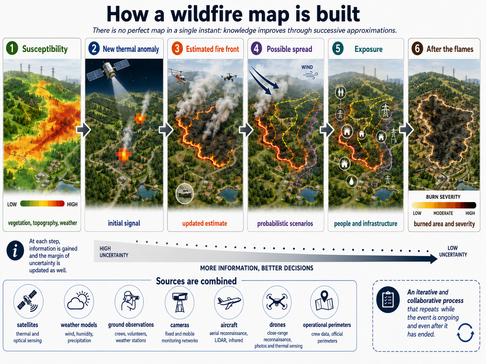

Where will the fire go?

It has been months since I last wrote on this blog, and I am truly sorry about that 🫣! However, I have decided to return with a new series of articles that I plan to release once a month (we’ll see how that goes).
How is GeoAI used to manage wildfires?
At 8:18 AM on July 29, 2026, the Joint Research Centre’s page dedicated to European wildfires reported 434,976 hectares burned in the European Union since the beginning of the year, 1,407 detected fires, and 17.98 million tons of carbon dioxide emitted. Comparing this to the same period in 2025—already cited by the JRC as the worst year on record—makes the situation look even more severe than it was a year ago!
 I am writing this article on July 30, 2026. The map shows the median anomaly of the Fire Weather Index (FWI), calculated as the standard deviation from the historical average of the last thirty years.
I am writing this article on July 30, 2026. The map shows the median anomaly of the Fire Weather Index (FWI), calculated as the standard deviation from the historical average of the last thirty years.
The figures from EFFIS (European Forest Fires Information System) are constantly being updated, and estimates are corrected as new images—or rather, better data in general—become available.
The clearest signal comes from the EFFIS Weekly Cumulative Severity Rating. The Daily Severity Rating (DSR) translates weather conditions favorable to fire into a measure of their severity: the higher the value, the more intense and difficult to control a potential fire becomes. In 2026, the cumulative value—the day-by-day sum since the beginning of the year—is already beyond the range observed in the historical series available to date. Explore the chart to compare the cumulative trend, the weekly trend, and the deviation from the historical range.
Let’s take a step back. I mentioned earlier that estimates are updated as new, perhaps more recent, more detailed, or more relevant observations arrive for a specific phase of the fire. But what does that mean in practice?
During a wildfire, there is no single, perfectly updated map that can show everything happening at once. Instead, there is a mosaic of information coming from satellites with different acquisition times and resolutions, weather models, field observations, thermal cameras, airborne sensors, drones, and operational perimeters that are tracked and then updated. Each new piece of data adds a layer: it reduces uncertainty and, often, makes visible what we couldn't even measure before.
This is where GeoAI comes into play, as part of a broader system that includes GIS, Earth observation, physical modeling, and operational data. The problem, however, is constantly changing. First, we try to estimate where and under what conditions a fire is most likely to ignite or spread. When a new signal appears, we need to detect and validate the thermal anomaly, estimate and update the fire front, simulate potential spread scenarios, identify exposed people and infrastructure, and assess their vulnerability. After the flames have passed, the focus shifts again: we delineate the burned area and the severity of the damage to understand what was hit and with what intensity.
At first glance, it seems like one big application, but looking closer, different problems emerge, spanning time scales from months down to minutes. Let’s dive into the details to understand this better 🧐!

Each phase of a wildfire requires different data, models, and decisions: from forecasting favorable conditions to assessing damage and recovery.
The fire starts before the flames
When the first red dot appears on a satellite map, part of the story, unfortunately, has already been written...
In the preceding days, there may have been little rain. The wind may have picked up. The vegetation may have lost moisture, while dry branches, needles, and shrubs continued to accumulate. A rainy spring may have even encouraged the growth of new biomass which, once dried out, becomes fuel. Then comes the ignition: lightning, a spark, agricultural activity, a power line, or a deliberate or careless human act.
To assess this phase, meteorological danger indices have long been used. In Europe, EFFIS calculates the Fire Weather Index based on forecasts from ECMWF ($\sim 8$ km) and Météo-France ($\sim 10$ km), representing it in six harmonized classes, ranging from low to very extreme. The official EFFIS documentation describes one-to-nine-day forecasts and a "Very Extreme" class introduced in 2021 to distinguish the most severe Mediterranean situations.
The value indicates how much weather conditions and dry ground vegetation make it easy for a fire to start, and how quickly it could spread and become difficult to extinguish if a spark or other ignition source occurs.
That if matters a great deal.
A territory can be very dry and windy without any fire starting. Conversely, an area with less extreme conditions might burn because the ignition occurs in the wrong spot, near continuous vegetation and an urban-rural interface.
It is useful here to separate at least three concepts.
Hazard describes the possibility of the phenomenon occurring with a certain intensity. Probability of activity attempts to locate where it is plausible to observe a fire, adding information about fuel and ignition sources. Risk incorporates what could be affected: people, homes, roads, ecosystems, power lines, and farms.
These three concepts may seem similar, but the decisions they suggest differ significantly.
In Italy, the Department of Civil Protection prepares a national bulletin every day. The assessment includes weather-climatic conditions, vegetation, land state and use, morphology, and territorial organization. The product expresses, across three levels, a probabilistic estimate of susceptibility to ignition and spread over the following twenty-four hours, and also supports the management of the state aerial fleet.
This is already a form of GeoAI, even when the label is not explicitly used. There is a geographic component, because every variable changes in space. There is a modeling component, because heterogeneous data must be fused. There is a downstream decision, because an area classified as having high susceptibility may require a different deployment of personnel and resources. For the summer of 2026, the national forest fire campaign was set from June 15 to October 15.
In recent years, machine learning has attempted to sharpen the focus a bit more (pardon the unfortunate pun in this article). The Probability of Fire model developed by ECMWF integrates weather, fuel abundance and moisture, human presence, lightning, and observations of fire activity. According to the ECMWF technical presentation, the joint use of different sources has improved predictive capacity by up to 30%.
The scientific study from which the system originates adds an even more instructive result: data on fuel, ignitions, and observed fires reduce false alarms from models based primarily on weather, while the quality of the input outweighs the complexity of the architecture. In that comparison, a tree-based solution like XGBoost achieved performance comparable to a more sophisticated neural network.

Performance of data-driven fire activity prediction in the ECMWF study. The figure compares different models and datasets, showing the contribution of observations on fuel, ignitions, and detected fires. Figure 1 from Di Giuseppe et al. (2025), CC BY 4.0.
A study conducted in eastern Spain helps illustrate what it means to add the human component. The authors cross-referenced 849 ignition points with distances from roads and wildland-urban interfaces, population density, fuel types, and dead fuel moistureDead fuel refers to plant material lacking living tissues: for example, leaves, needles, dry grass, twigs, and woody debris on the ground. Its moisture content depends almost entirely on relative humidity and precipitation; fine materials change moisture levels much more rapidly than larger ones. Source: NWCG, Glossary of Wildland Fire; NWCG guide on weather and fuel moisture.. The Random Forest algorithm achieved an AUC of 0.76 ± 0.01 and demonstrated how climate and demographic shifts can reshape ignition probability. This is a lesson that frequently recurs in GeoAI: before adding layers to a model, it is worth asking whether we are observing the territory correctly.
ECMWF (Francesca Di Giuseppe, Joe McNorton, Christopher Barnard) subsequently published a Probability of Fire Toolbox, built as a sequence of notebooks to prepare data, train local models, and evaluate them. This choice is interesting because it acknowledges a limitation of global products: climate, vegetation, land management, and human activity vary from region to region. The same conclusion emerges from a study of over 17,000 verified fires in various areas of central Russia: F1-scores ranged between 0.70 and 0.87, and the authors recommended models adapted to the characteristics of each region.
Other comparisons make this limitation even more apparent. In Changsha, China, evapotranspiration and canopy water content were found to be the most influential factors in a Random Forest model with an AUC of 0.981; in a study comparing Okanogan, USA, and Jamésie, Canada, performance decreased when training occurred in one region and validation in the other, despite retaining partial predictive capacity. This is the kind of result that a global average tends to hide.
The geographical domain is embedded in the very logic of the algorithm: it changes the relationships between variables and, consequently, the validity of the model.
A red dot is not the fire front
When you open NASA FIRMS on a summer day, you unfortunately see constellations of red and orange dots. The immediate impression is that every dot represents a flame and the collection of dots represents the fire's perimeter.
Don't be fooled! 🥲
In the MODIS product, a hotspot represents the center of a pixel—roughly one kilometer wide—where the algorithm has identified one or more thermal anomalies. EFFIS notes that the nominal resolution of the MODIS pixel for active detection is one kilometer. The published point does not necessarily coincide with the exact location of the source, and, most importantly, it does not mean the entire cell is burning!
Detail improves significantly with VIIRS! The NASA VNP14IMG_NRT product detects sub-pixel activity within 375-meter nominal cells. However, the nature of the information remains the same. We are observing a thermal anomaly, not the exact outline of the blaze.

The point is published at the center of the cell containing the anomaly. The thermal source may be located in another part of the pixel.
Measuring the burned area requires a different procedure!
The Rapid Damage Assessment module of EFFIS combines MODIS, VIIRS, and Sentinel-2 imagery. Areas identified through automated procedures are verified and corrected via visual interpretation; since 2018, Sentinel-2 has allowed for the refinement of perimeters to twenty meters and the inclusion of some fires below the thirty-hectare threshold. EFFIS estimates that the areas mapped in this way represent approximately 95% of the total burned area in the European Union, despite accounting for only a fraction of the total number of fires.
This verification process also prevents less intuitive errors. Industrial plants, very hot surfaces, or agricultural activities can produce suspicious thermal signals. The algorithm flags these for attention, and subsequent verification determines whether a fire consistent with the product actually occurred there.
Do you have any idea what changes?
I have created a small simulator that compares how pixel size changes and how the thermal source shifts within the cell.
The choice of sensor introduces another trade-off. Polar-orbiting satellites, such as those carrying MODIS and VIIRS, offer more detail but only observe the same territory during specific satellite passes. Geostationary satellites, on the other hand, maintain a constant view of the same portion of the planet and update the scene much more frequently, albeit with larger pixels.
In the United States, the Next Generation Fire System analyzes images from GOES satellites. NOAA states that the system can generate an alert within as little as one minute from the moment fire energy reaches the satellite; furthermore, in 2026, the agency launched a public portal featuring experimental, near-continuous detection and monitoring.
Another way to reduce latency is to perform processing directly in orbit. ESA’s PhiFireAI application classifies Φsat-2 images by distinguishing between water, safe areas, burn scars, and fire-affected zones, thereby avoiding the download of scenes that lack useful information. Following the commissioning phase, Φsat-2 began distributing scientific data in July 2025.
Mediterranean Europe is also moving toward dedicated constellations. In May 2026, Greece launched four CubeSats (now you know what they are 😜) for the new Hellenic Fire System, which ESA identifies as the first national satellite capability dedicated to fire detection and tracking. Two months later, the system returned its first thermal image of Greek territory.

First thermal image from the Hellenic Fire System over Greek territory. Source: ESA.
Remote sensing can also estimate how ready fuel is to burn. A continental-scale experiment combined ground observations, weather models, and VIIRS reflectances, revealing that removing satellite data significantly worsened the error in estimating dead fuel moistureDead fuel is plant material without living tissues: for example, leaves, needles, dry grass, twigs, and downed wood. Its moisture content depends almost entirely on relative humidity and precipitation; fine materials change moisture much more rapidly than larger ones. Source: NWCG, Glossary of Wildland Fire; NWCG guide on weather and fuel moisture.. At a much finer scale, experimental work in Harbin used 5,945 multispectral drone images and 480 samples. The result? The ConvNeXt model estimated "dead fuel" moistureDead fuel is plant material without living tissues: for example, leaves, needles, dry grass, twigs, and downed wood. Its moisture content depends almost entirely on relative humidity and precipitation; fine materials change moisture much more rapidly than larger ones. Source: NWCG, Glossary of Wildland Fire; NWCG guide on weather and fuel moisture. with a MAE of 1.54% on the test set.
More satellites, however, do not eliminate the problem; they only reduce it. One sensor detects heat, another reads vegetation, and a third uses radar to penetrate smoke and clouds. The best map is created by combining these inputs and clearly stating their timing, resolution, and limitations.
Where will the flames go?
Returning to the article's core question: how can we determine where the flames will go? We have seen that detecting a fire means answering the question: where is there thermal activity?
Predicting its spread means addressing another: how will the perimeter change as wind, slope, and fuel interact?
Flames tend to move faster uphill because they preheat the fuel ahead of them. Wind tilts the flame, carries heat, and can lift embers capable of starting spot fires beyond the main front. Vegetation continuity creates corridors, while roads, rocks, and previously burned areas can interrupt them. Moisture levels change the energy required for ignition.
Operational models did not originate with deep learning. Systems like FlamMap and FARSITE incorporate decades of physical and empirical research. The US Forest Service documentation lists eight basic geographic layers, including elevation, slope, aspect, fuel models, and canopy characteristics. Outputs include rate of spread, flame length, intensity, perimeter growth, and conditional burn probability.
Not all models are equivalent. FlamMap calculates potential behavior under constant environmental conditions, while FARSITE allows for time-varying weather sequences. The former is useful for comparing landscapes and fuel treatments; the latter is better at tracking temporal evolution.
GeoAI can enter the pipeline by estimating variables that are difficult to observe, such as fuel distribution, by correcting systematic errors in a simulator, by building a faster surrogate for a costly simulation, or by assimilating new observations to update the predicted perimeter. These are all distinct tasks, and it is worth specifying which one is being entrusted to the model in each case!
The WIFIRE Firemap platform offers an example of this integration. The UC San Diego program combines near real-time weather, ignition points, topography, and vegetation characteristics to produce predictive maps in minutes. During the most dangerous events, perimeters detected by aircraft can be assimilated to update simulations.
A forecast is a range of possibilities
The fire front does not follow a pre-written line. Small differences in wind, humidity, or spotting can produce divergent trajectories. This is why a probabilistic forecast is often the resulting output.

The figure is derived from 1,000 reproducible runs of a simplified cellular automaton. The frequency of passage is the ratio between the runs that reach each cell and the total number of simulations. It illustrates a principle, not an operational forecast.
Research is also experimenting with generative models. A paper published in 2026 in Geoscientific Model Development uses a diffusion model to produce sets of plausible futures. The system learns to emulate a probabilistic cellular automaton conditioned by canopy cover, vegetation density, slope, and wind. The resulting ensembles represent the share of simulations in which each cell is reached by the fire.
The authors present this as a proof of concept trained on synthetic sequences, albeit constructed from the geographical contexts of the Chimney and Ferguson fires. Future work includes validation against progressions observed by satellite.
The reason I avoid calling this "AI that predicts fires" is that it would oversimplify everything behind the scenes. AI is useful, but it is not the only factor that allows us to predict fire behavior.
Shift the wind, change the outcome
The interactive lab below uses the same general idea as the previous figure: a grid, synthetic fuel, dryness, slope, wind, and spotting. Each run contains randomness. By changing the controls, you can see how quickly a single trajectory can become fragile.
Is there a good European API?
Certainly!
Copernicus EMS provides a JSON API for querying public activations. The general documentation indicates a synthetic endpoint for the details of each code, including title, category, countries, centroid, status, and number of products. For Rapid Mapping activations, an extended response is also available, containing areas of interest, source imagery, statistics, geometries, layers, and links to downloadable packages. The new viewer also associates an OpenAPI link with each record, such as the one for activation EMSR906, which we will use shortly!
Why did I choose that one? Because it was a fire I followed closely over the last few days.
The following box tests these interfaces in sequence and declares which response it managed to use. It displays only publicly available metadata, retains the time of the last check, and, when available, starts from a local snapshot generated during publication. The JRC catalogs the service as public and allows its reuse with attribution to the European Commission, subject to any third-party works (official service sheet and reuse conditions).
This module should be read as an editorial window into the evolution of a geospatial product. For alerts, evacuations, and safety decisions, always rely on official communications from Civil Protection, the Fire Department, and local authorities.
Copernicus EMS has announced that Rapid Mapping vector data is delivered on average two hours before the formatted maps and that, in addition to shapefiles and GeoJSON, the GeoPackage format is also available. For an operations room, two hours can make all the difference!
How does Civil Protection use this data?
A propagation forecast becomes meaningful when it is overlaid on inhabited territory.
Where are the houses? Which roads might be cut off by the fire front? Is there only one evacuation route? Where are the hospitals, campsites, accommodation facilities, power lines, and storage depots located? Which water sources are available for aircraft? How long does it take for crews to reach a specific slope?
This is where GeoAI stops being just Earth observation and becomes decision support.
The Italian firefighting campaign offers a clear example. The Unified Air Operations Center coordinates the state fleet, and deployments are adapted based on bulletins, forecast conditions, regional capabilities, and requests arriving from the field. The model does not decide which aircraft to launch. Instead, it narrows the field, prioritizes focus, and provides a common foundation for people who must make quick decisions.
A segmentation model might achieve an excellent intersection-over-union score on a benchmark, but arrive only after the fire front has already crossed a road. A slightly less accurate model might provide ten extra minutes and change a decision. Computational metrics remain necessary, but they must align with operational ones: latency, reliability, false alarms, missed events, time saved, and resources reallocated.
The decisive question becomes: what was made possible thanks to this information?
When the fire is no longer visible
Extinguishing the flames is only one part of the emergency.
The loss of vegetation and changes to the soil can increase erosion, runoff, shallow landslides, and debris flows. Heavy rain, just a few weeks after a fire, can open a second chapter of problems.
To reconstruct the severity, images acquired before and after the event are often compared. The Normalized Burn Ratio relates near-infrared and short-wave infrared—two regions of the spectrum sensitive to vegetation and moisture. The difference between the previous and subsequent values, the dNBR, helps distinguish between unburned areas and light, moderate, or severe damage. Copernicus describes NBR, burned area, and Fire Radiative Power as complementary measures of impact.

The data here is also simulated. Severity thresholds are not universal and must be calibrated with local observations.
In the United States, BAER teams use preliminary satellite products to assess vegetation, soil, and watersheds. The program provides imagery, severity classifications, and other data within about seven days of containment, while BARC maps are later corrected in the field to produce the final soil burn severity. USGS documentation clarifies that BARC classes are four—high, moderate, low, and unburned—and serve as input for stabilization interventions.
Spectral comparison does not end the matter. Within the same perimeter, destroyed areas, lightly affected patches, and islands that remained green can coexist. Furthermore, radar, optical, and on-site inspections measure different properties. The final map is a synthesis, not a neutral photograph.
Meanwhile, smoke travels a different geography than the flames. The Copernicus Atmosphere Monitoring Service uses the Global Fire Assimilation System to derive intensity and emissions from Fire Radiative Power. GFAS is updated in near real-time and feeds forecasts on smoke composition and transport. CAMS also emphasizes that Fire Radiative Power does not provide the physical surface area of the fire: it measures the energy signal used to estimate intensity and emissions.
At that point, the damage perimeter no longer coincides with the burned perimeter. A plume can cross regions and continents, degrading air quality far from the fire front.
The right map, at the right time
GeoAI applied to wildfires resembles a relay race.
The first system reads the territory's susceptibility. The second intercepts a thermal anomaly. The third reconstructs the perimeter. A simulator explores possible trajectories. A GIS overlays housing, infrastructure, and escape routes. After the fire is extinguished, other models measure severity, erosion, and smoke transport.
Each step hands off an incomplete representation of the world to the next.
It is easy to be mesmerized by the latest neural network or a new satellite constellation. Looking closer, however, value is created at the hinges: in how a hotspot is verified, a simulation is updated, an uncertainty is communicated, and a forecast reaches the operations room.
The question "can artificial intelligence predict a fire?" is too broad to be useful.
It is better to break it down.
Which phase are we trying to anticipate? With what observations? At what resolution? How quickly must the answer arrive? Who will have to make a decision based on that map? And what happens when the model is wrong?
Fire races across the landscape. Information must be able to run a little faster!
Sources and further reading
The main citations have been included directly in the passages they support. For further reading:
- JRC — current wildfire situation in the European Union
- EFFIS — Fire Danger Forecast
- EFFIS — Active Fire Detection
- EFFIS — Rapid Damage Assessment
- Protezione Civile — national forest fire forecast bulletin
- ECMWF — Probability of Fire
- Di Giuseppe et al. — Global data-driven prediction of fire activity
- Illarionova et al. — robust wildfire occurrence prediction
- Gelabert et al. — human-caused ignitions in eastern Spain
- Wu et al. — fuel factors and fire prediction in Changsha
- Moghim and Mehrabi — generalization across physically different regions
- Schreck et al. — VIIRS and machine learning for fuel moisture
- Xing et al. — fuel moisture estimation with multispectral drones
- NASA Earthdata — VIIRS active fire 375 m
- NOAA — Next Generation Fire System
- ESA — PhiFireAI
- ESA — Hellenic Fire System
- US Forest Service — FlamMap
- UC San Diego — WIFIRE Program
- Yu et al. — probabilistic wildfire spread with a diffusion surrogate
- Copernicus EMS — Greek wildfires of July 2023
- Copernicus EMS — EMSN159, Rhodes assessment
- Copernicus EMS — Rapid Mapping API documentation
- USGS — Burned Area Emergency Response
- CAMS — global fire and smoke monitoring